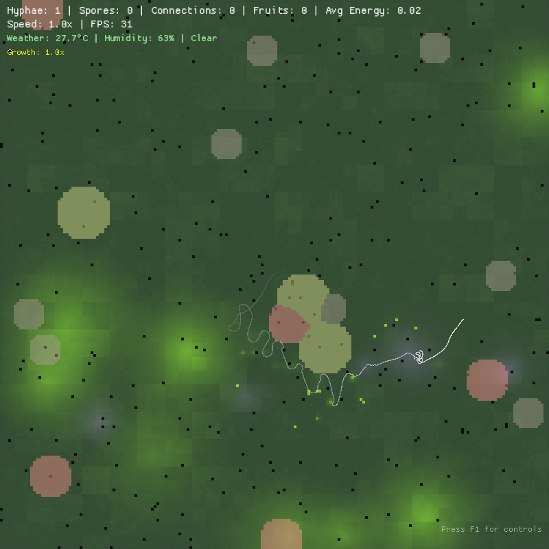
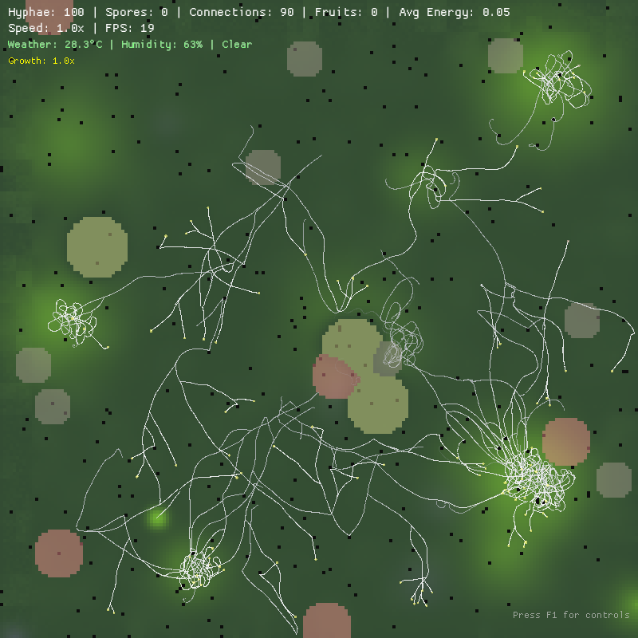
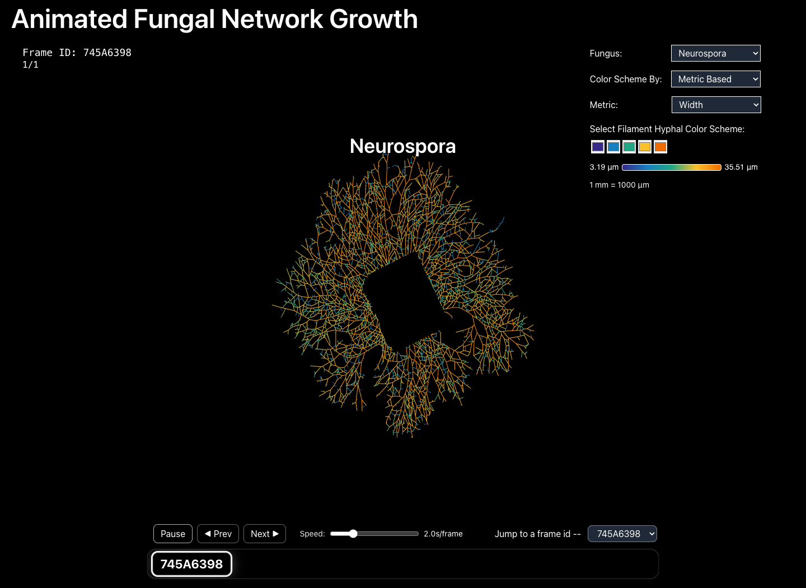

Capturas dos próprios projetos, reunidas em 22/11/2026. Cada imagem tem sua origem indicada. As cores das visualizações representam campos e métricas; não são referências de pigmentação natural.
Ver estudo com a mesma rede de Neurospora nas cores do Fluxus · Comparar original e estudo lado a lado
Repositório · Capturas publicadas pelo autor, preservadas como estão no commit d793181.


Captura do visualizador original executado localmente, sem alterar seu código, com os dados públicos do quadro 745A6398 de Neurospora. A demo pública carregou uma vez e depois retornou limite de requisições (429). Para esta captura foi baixado somente o quadro final, por isso a interface mostra 1/1. Código e dados do commit 2fd578d. As cores representam a espessura dos filamentos.

Não encontrei imagens ou vídeos versionados na árvore pública consultada (3429be3). O programa exporta imagens 2D/3D e vídeos quando executado; não há uma captura pronta aqui para mostrar.